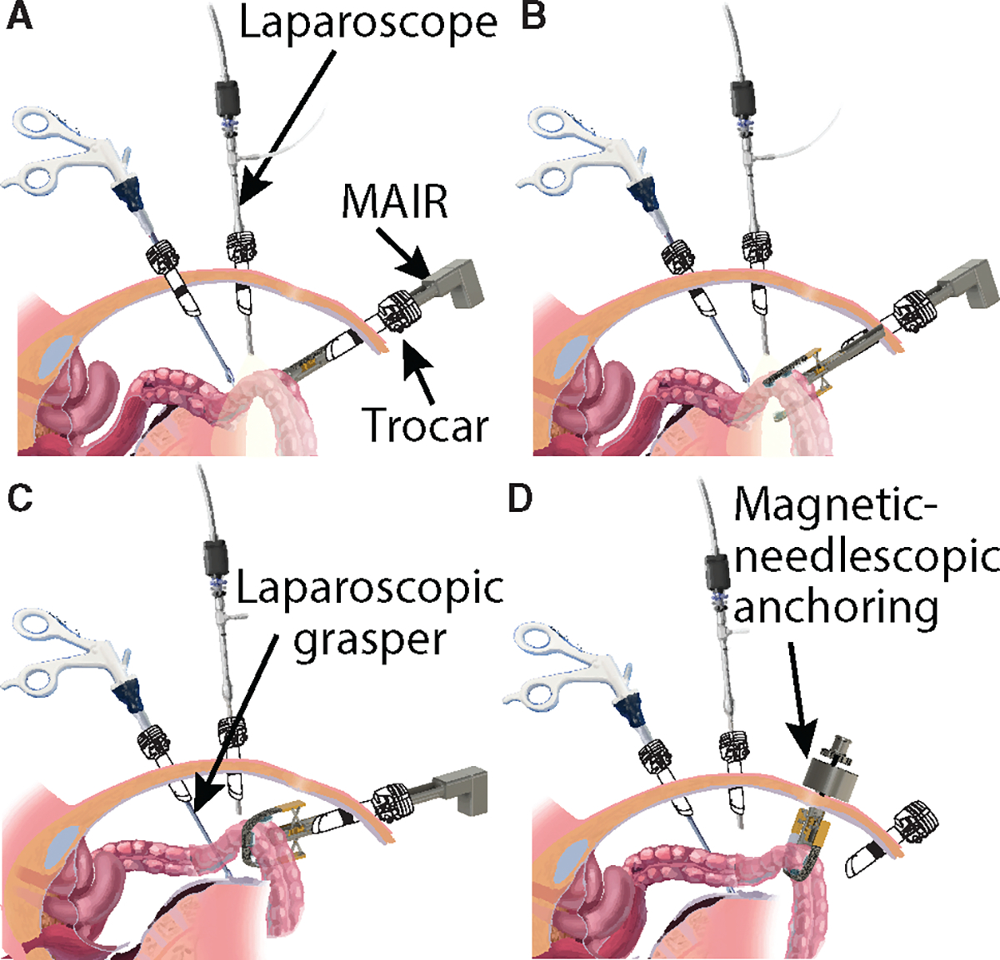
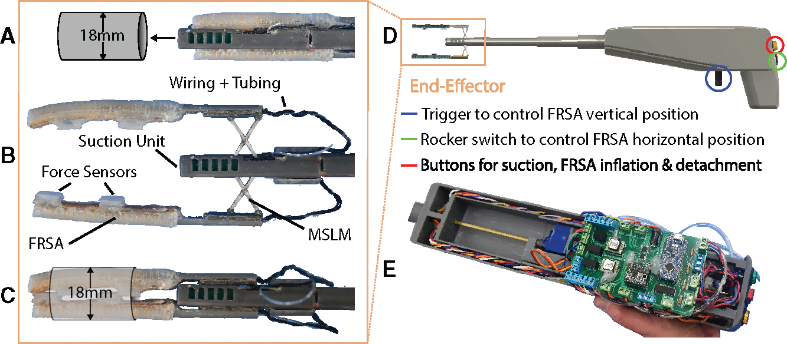
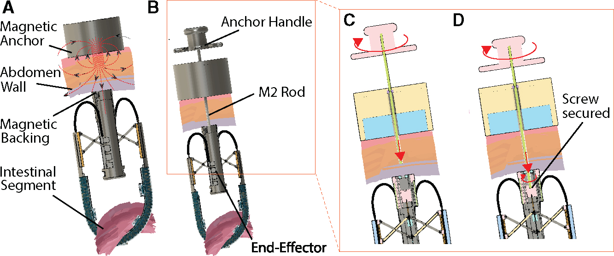
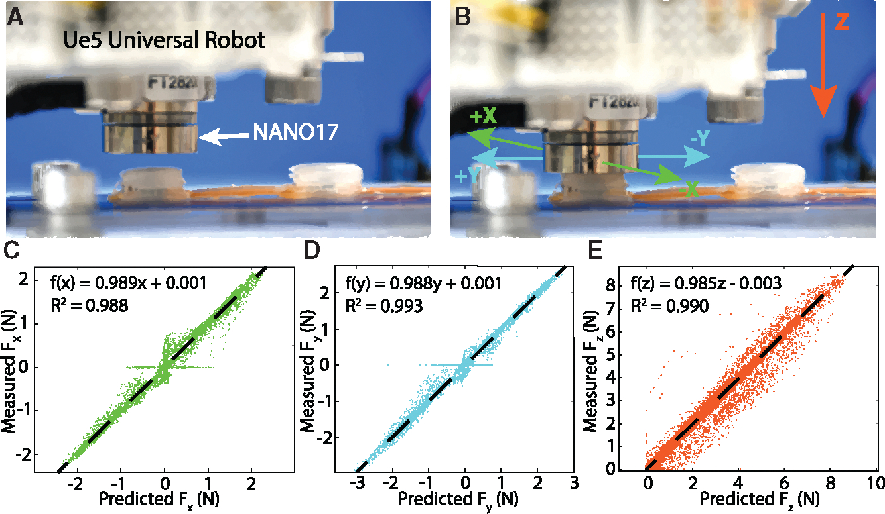
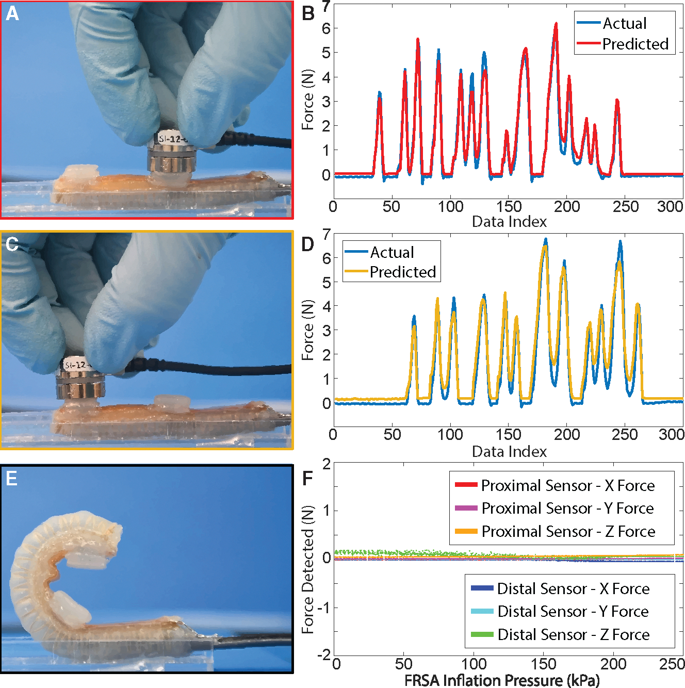

01 / System
System Overview
The Modular Apparatus for Intestinal Retraction (MAIR) brings a compliant grasp and a detachable retractor into one instrument. A distal suction unit first isolates a bowel segment; two pneumatic actuators then deploy and curve around it while embedded sensors monitor interaction forces. For passive retraction, the end effector separates from the main instrument and attaches to an abdominal-wall anchor. The published evaluation combines benchtop models with explanted porcine tissue.

02 / Motivation
Research Motivation
Laparoscopic instruments must fit through a small access port while handling tissues whose size and compliance vary substantially. A rigid jaw can concentrate contact stress, and the loss of direct tactile feedback makes that interaction harder to judge. Dilated intestine compounds the problem: its diameter may exceed a conventional grasper’s opening, so a compact instrument must expand after entry to surround the specimen.
Retraction also occupies an assistant and an access port for as long as tissue must be held aside. MAIR therefore addresses two linked design objectives: establish a compliant, monitored hold and maintain that hold after the main instrument is removed. The later journal system extends the preliminary conference grasper with modular detachment and anchoring; those additions should be distinguished from the earlier feasibility study.
03 / Design
System Design
An expandable, sensorized end effector
The closed end effector passes through an 18 mm opening. A miniaturized scissor-lift mechanism adjusts the separation of two opposing fiber-reinforced soft actuators, while a sliding carriage controls their position relative to the suction tip. Inflation bends the actuators around the intestine. Soft magnetometric sensors on the actuators use changes in magnetic field to estimate force; the handle contains the motors, control electronics, and user inputs.

Detachment and hybrid anchoring
The modular design separates a proposed single-use end effector from the reusable main instrument. Before detachment, the actuator tubing is heat sealed to retain inflation. Magnets help align the detached end effector with an external anchor, and a threaded needlescopic fastener provides mechanical retention through the abdominal wall. Pneumatic sealing, release from the instrument, magnetic alignment, and final anchoring are separate operations; magnets alone do not provide the complete attachment.

04 / Method
Methodology
The workflow progresses from a temporary suction hold to a compliant grasp, then optionally to passive anchoring. The active instrument and passive retractor serve different stages of the procedure. In the published in-vitro abdominal model, the actuators were inflated to 200 kPa before the tubing was heat sealed and the end effector detached; this condition is distinct from the 250 kPa actuator and sensor characterization tests.
Isolate
Enter in the closed configuration and apply distal suction to separate the target intestinal segment from nearby tissue.
Deploy
Open the scissor lift and advance the actuator carriage, adjusting the soft fingers around the specimen.
Envelop and sense
Inflate the soft actuators to form a circumferential hold while the integrated sensors monitor interaction forces.
Detach
Heat seal the pneumatic tubing to maintain inflation and release the modular end effector from the instrument.
Anchor
Position the end effector with an auxiliary grasper, align magnetically, and secure the needlescopic mechanical connection.
05 / Experiments
Experimental Setup
Testing separated actuator characterization, sensor calibration, installed-sensor validation, and grasping demonstrations. Actuator motion was tracked electromagnetically, and blocked-tip force was measured against a NANO17 transducer up to 250 kPa. A robot-mounted NANO17 also supplied reference forces for calibrating each magnetic sensor. Subsequent grasp trials used weighted silicone bowel surrogates and explanted porcine intestine, including specimens dilated with air- or water-filled balloons.
The calibration scatterplots below compare estimated and reference forces in three directions. The later validation instead tested normal-force predictions with sensors installed on constrained actuators inflated to 250 kPa. Those recordings used a three-sample temporal alignment to account for communication latency, with model inference performed in postprocessing. This distinction matters when interpreting the normal-force errors reported in the results.

06 / Results
Evaluation & Results
The evaluation asks whether the device can grasp challenging specimens, whether its sensors track applied normal force, and whether a grasp can be converted to passive retraction. These experiments support preclinical feasibility under the reported laboratory conditions. They do not establish clinical effectiveness, and the actuator’s maximum blocked force should be interpreted separately from forces applied to tissue during a grasp.
- 500 g
- Attached load on a silicone bowel surrogate in the grasp demonstration.
- 6.62 N
- Maximum actuator blocked-tip force at 250 kPa; not tissue interaction force.
- 1 hour
- Ex vivo tissue hold followed by clinician visual inspection.
Grasping weighted and dilated specimens
The end effector held a silicone intestine carrying a 500 g attached load and a surrogate with a film representing retained mesentery. It also grasped explanted porcine bowel dilated by air- and water-filled balloons to diameters of at least 3 cm. In a separate ex-vivo hold test, suction was used for no more than two minutes, followed by a one-hour actuator hold; clinician visual inspection found no visible trauma on the tested samples.

Installed normal-force sensing
The paper compares the installed soft sensors with NANO17 reference measurements over five trials. Four sensor-specific mean absolute errors range from 0.200 to 0.383 N. Figure 5 retains the measured and predicted force traces and the no-load inflation test, making the experimental comparison visible. These normal-force statistics should not be generalized into an equally accurate three-dimensional contact-force estimate under arbitrary operating conditions.

| Sensor | MAE (N) | SD (N) |
|---|---|---|
| Distal 1 | 0.200 | 0.214 |
| Proximal 1 | 0.361 | 0.428 |
| Distal 2 | 0.302 | 0.407 |
| Proximal 2 | 0.383 | 0.419 |
Passive retraction in an abdominal model
The complete workflow was demonstrated in an in-vitro abdominal model using a compliant silicone intestinal surrogate. After suction and actuator grasping, the pneumatic tubing was heat sealed and the end effector released, positioned, and anchored. This demonstrates the mechanical sequence for maintaining a passive hold while freeing the main access opening. The model demonstration should be distinguished from the separate ex-vivo tissue tests and from a clinical procedure.

07 / Discussion
Discussion & Limitations
The evidence supports a compliant, monitored grasp on benchtop and explanted specimens, together with a detachable passive-retraction mechanism. The one-hour tissue-hold result is a visual inspection outcome on ex-vivo samples; it does not establish absence of microscopic injury or patient safety. In-vivo studies, cadaver evaluation, and comparative user studies were proposed as future work, including measurement of procedural time and usability.
The design also introduces practical tradeoffs. Its 18 mm access requirement, control-handle bulk, and added detachment and anchoring steps require further evaluation. Heat sealing avoids additional miniature valves but is irreversible: a sealed end effector cannot simply be repressurized for another grasp. The authors identify miniaturization, manufacturing changes, improved ergonomics, and user testing as development priorities rather than completed clinical capabilities.
08 / Resources
Resources & Citation
L. Kinnicutt, L. T. Gaeta, J. Rogatinsky, J. Lee, A. Cameron, A. J. Naik, D. T. Hess, and T. Ranzani. “A Soft Robotic, Modular Laparoscopic Grasper for Atraumatic Retraction of the Small Intestine.” Device 2(10), 100560 (2024). doi:10.1016/j.device.2024.100560.
@article{kinnicutt2024mair,
author = {Kinnicutt, Lorenzo and Gaeta, Leah T. and Rogatinsky, Jacob and Lee, Jungjae and Cameron, Amy and Naik, Amartya J. and Hess, Donald T. and Ranzani, Tommaso},
title = {A Soft Robotic, Modular Laparoscopic Grasper for Atraumatic Retraction of the Small Intestine},
journal = {Device},
year = {2024},
volume = {2},
number = {10},
pages = {100560},
doi = {10.1016/j.device.2024.100560},
url = {https://doi.org/10.1016/j.device.2024.100560}
}- Publisher article and supplemental information
- Accessible full text and complete figures
- Earlier conference version (2023)
The article’s contribution statement credits Jungjae Lee with fabrication alongside other team members. Figures are reproduced unchanged from Kinnicutt et al., Device (2024), under CC BY-NC-ND 4.0.